Je suis Anaïs Manchin, consultante en communication responsable et conseils RSE à Nice et fondatrice de Green Phénix. Chaque projet présente le contexte, mon rôle précis, la démarche suivie et, lorsqu'ils existent, les résultats mesurés. Vous y trouverez mes missions en alternance chez LUMIÅ, centre de recherche sur les modèles régénératifs, mes projets de Mastère Transition écologique et solidaire à Green Management School et un projet personnel.
Faire rayonner une étude de recherche sur le tourisme régénératif
Mise en page éditoriale
Schémas
LinkedIn
Emailing Brevo
Webinaire
Site web
Contexte
LUMIÅ publie une étude issue du programme de recherche-action Destination Regen, mené avec quatre destinations touristiques françaises. Le document, dense et technique, présente les concepts, les grands principes et les leviers d'action du tourisme régénératif, illustrés par des cas inspirants.
Objectifs
Positionner LUMIÅ comme acteur de référence sur le tourisme régénératif et faire connaître l'étude auprès des professionnels du tourisme, des hébergeurs et des territoires.
Mon rôle
Mise en page de l'étude complète et de sa synthèse
Conception des schémas
Toute la communication liée au projet : webinaire, LinkedIn, emailing, site web
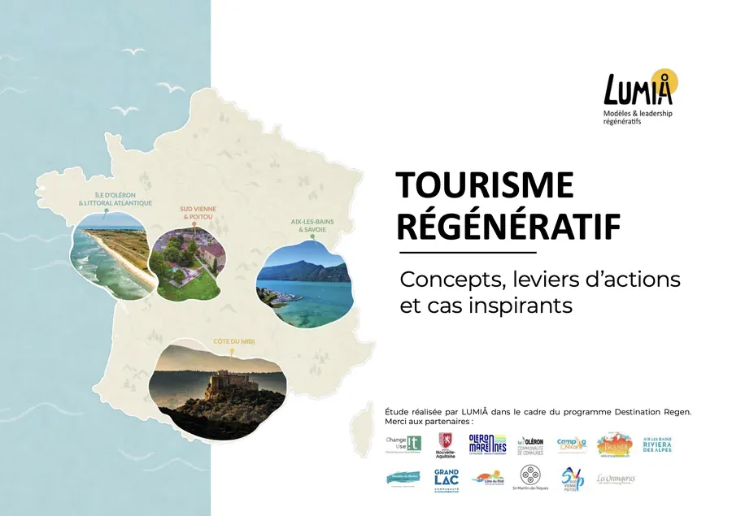
Étude complète, 160 pages
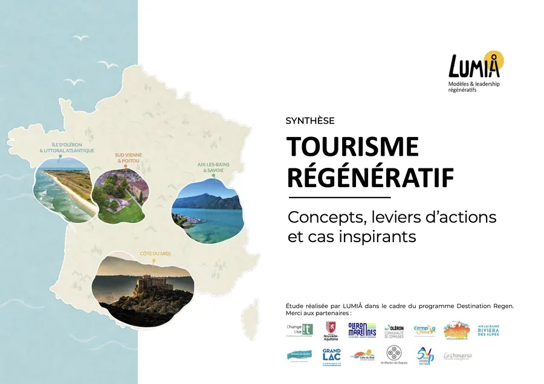
Version synthétique
519inscrits au webinaire de lancement
≈ 250participants en direct, près d'un inscrit sur deux
401téléchargements de l'étude et de la synthèse
14 %d'engagement sur la publication LinkedIn du schéma des 10 principes
Le dispositif
Mise en page et schémasÉtude de 160 pages et version synthétique
Webinaire de lancementRestitution des quatre cas pionniers et sortie de l'étude
Diffusion de l'étudeEmailing replay, page dédiée sur le site, relances
Ligne éditoriale LinkedIn6 publications tirées de l'étude, 10 autres préparées
Rendre lisible un contenu de recherche
Les schémas traduisent les notions clés de l'étude en visuels autonomes, pensés pour fonctionner dans le document comme sur les réseaux sociaux.
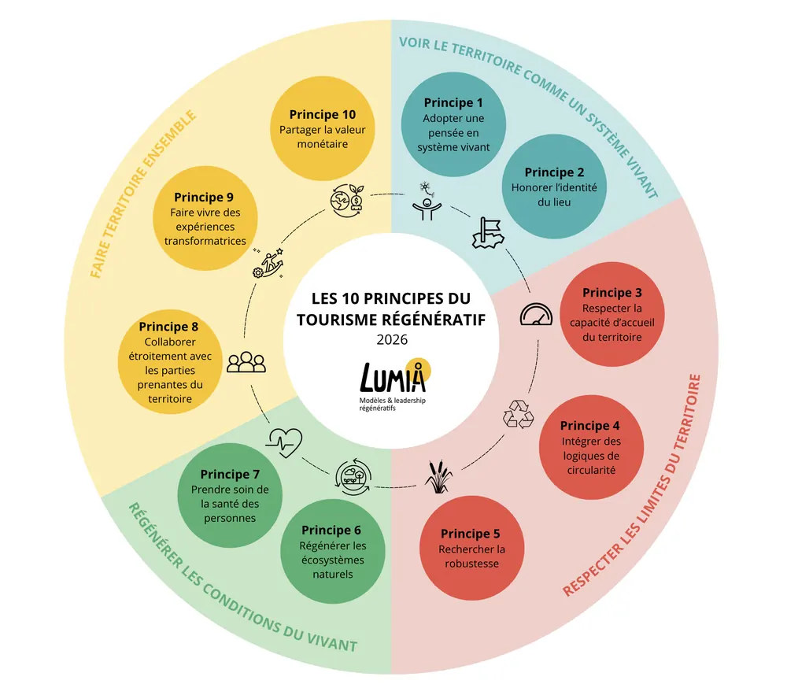
Les 10 principes du tourisme régénératif
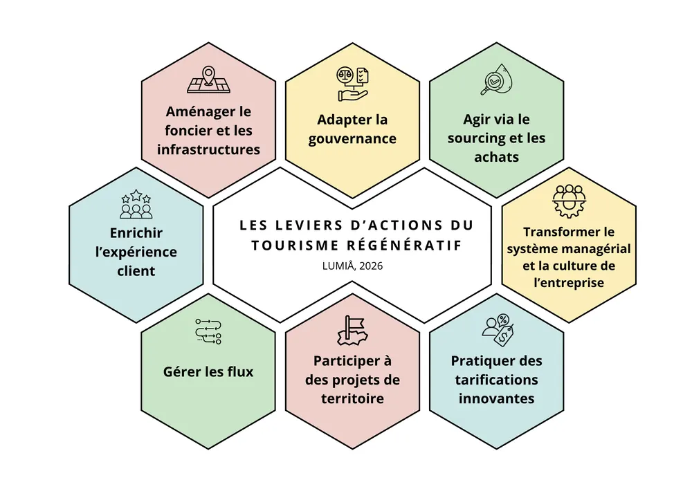
Les leviers d'actions du tourisme régénératif
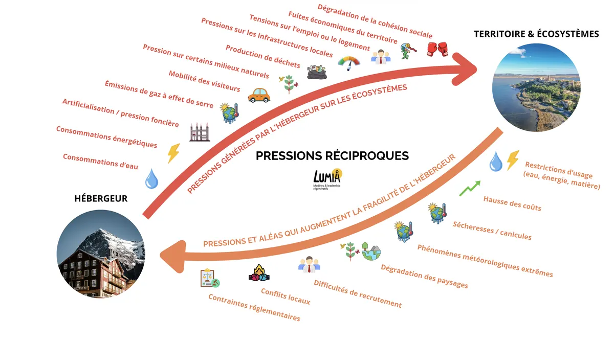
Les pressions réciproques entre l'hébergeur et son territoire
La mise en page
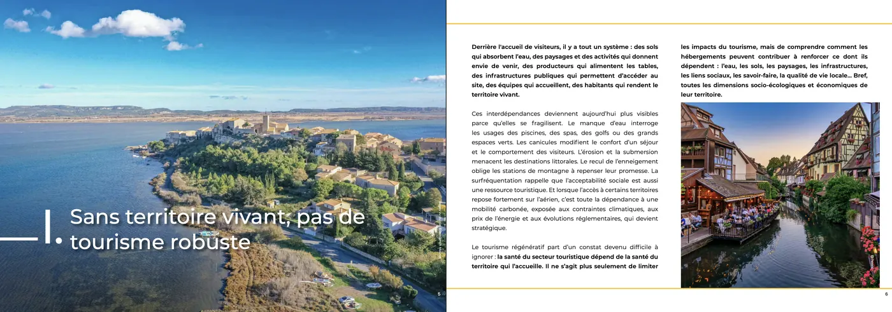
Ouverture de chapitre
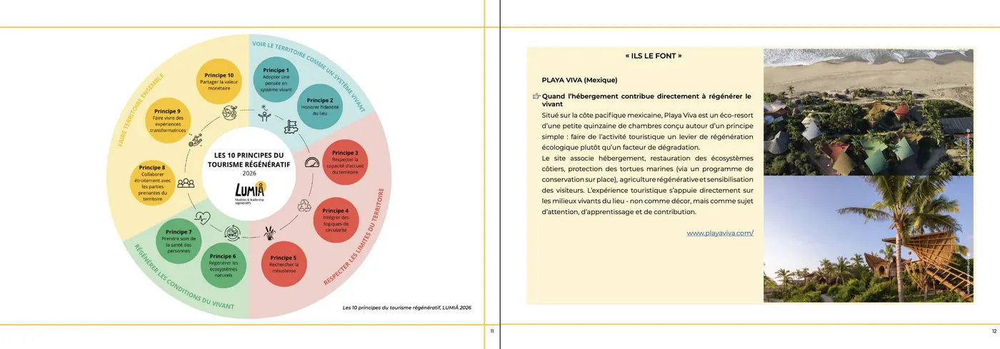
Schéma et encadré « Ils le font »
La diffusion
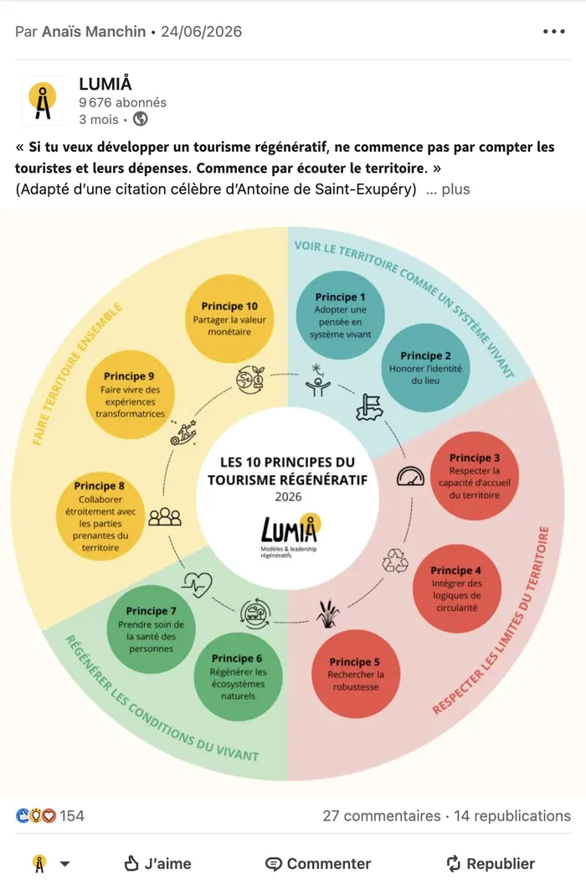
Publication du schéma des 10 principes, 24 juin 2026
14,06 % d'engagement
154 réactions
27 commentaires
14 republications
3 748 impressions
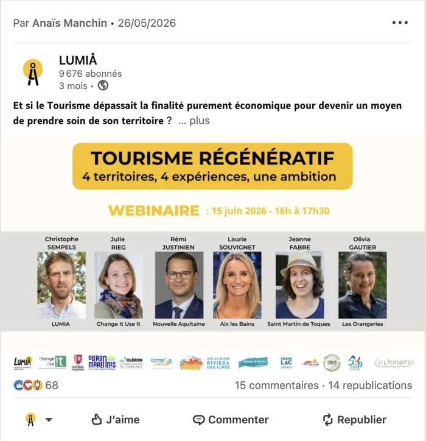
Annonce du webinaire, 26 mai 2026
9,95 % d'engagement
68 réactions
15 commentaires
14 republications
4 483 impressions
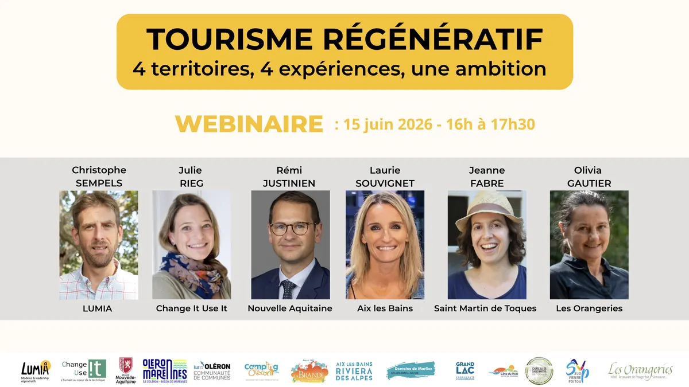
Visuel du webinaire : 519 inscrits, environ 250 participants au pic, 157 vues du replay
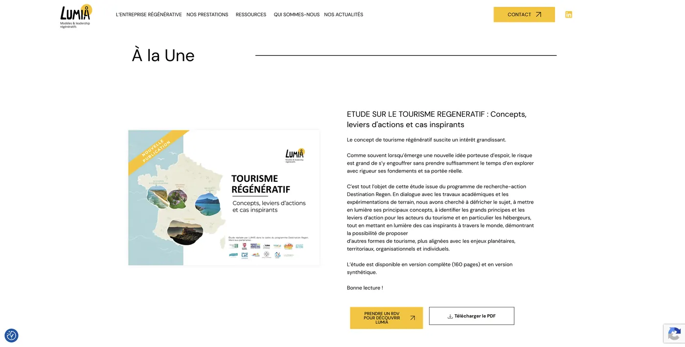
Mise en avant sur le site LUMIÅ : +51 % de visites sur l'ensemble du site en juin par rapport à mai
Taux calculés sur le nombre de destinataires. Données Brevo.
Emailing
Destinataires
Ouverture
Clic
Désinscription
Annonce du webinaire (base ciblée)
3 906
47 %
10,6 %
0,3 %
Newsletter mensuelle (toute la base)
7 582
37 %
9,9 %
0,5 %
Replay et téléchargement (inscrits)
519
61 %
29 %
0,4 %
L'étude a été rédigée par l'équipe de recherche de LUMIÅ dans le cadre du programme Destination Regen. Les visuels et les chiffres sont présentés avec l'accord de LUMIÅ.
LUMIÅ · novembre 2025 à janvier 2026
Lancer une étude de référence sur l'urbanisme régénératif
Mise en page éditoriale
Schémas
LinkedIn
Emailing Brevo
Webinaire
Rédaction pour un expert
Contexte
LUMIÅ publie Urbanisme régénératif : concepts, méthodologie et exemples, une étude menée avec le soutien de Bouygues, Bouygues Construction et Enedis. Elle répond à une question : comment les villes peuvent-elles cesser d'être des facteurs de dégradation pour devenir des leviers de régénération socio-écologique ? En six chapitres, elle propose une méthodologie en sept étapes, illustrée par trois projets urbains.
Objectifs
Faire reconnaître LUMIÅ comme expert de l'urbanisme régénératif auprès des acteurs de l'urbanisme et du bâtiment, et générer des téléchargements de l'étude.
Mon rôle
Mise en page de l'étude et de sa synthèse
Création des visuels et des schémas
Communication de lancement : webinaire, LinkedIn, emailing
Rédaction de publications pour le compte du directeur de l'étude
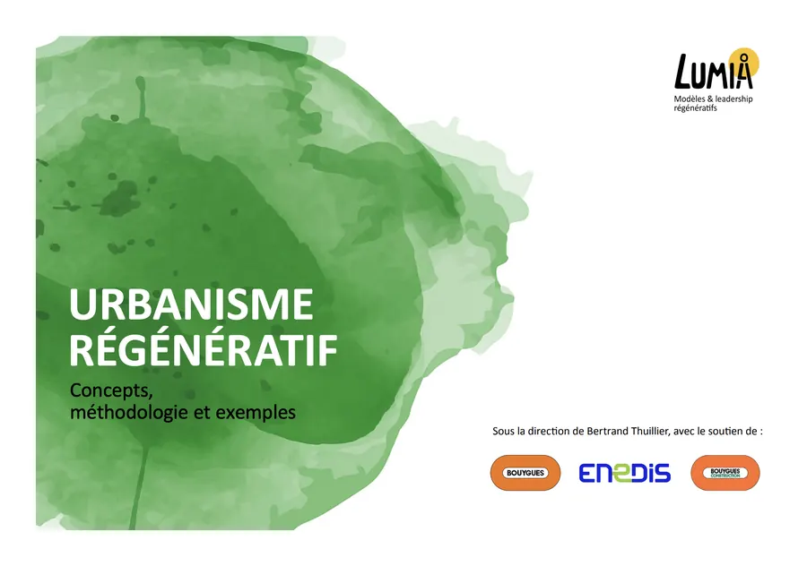
Étude complète
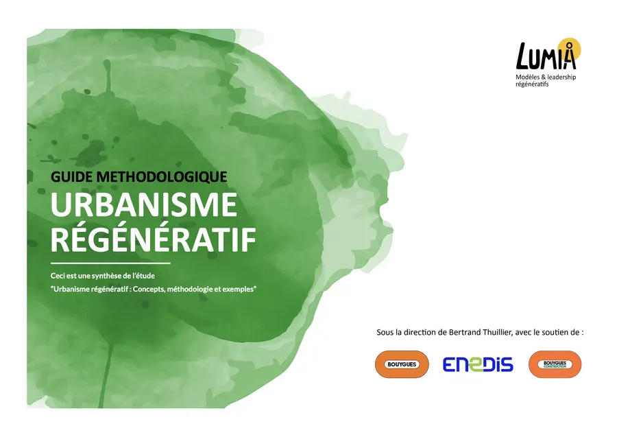
Guide méthodologique, synthèse de l'étude
217inscrits au webinaire de présentation
80 à 90participants en direct, et 120 vues du replay
32 348impressions sur la publication LinkedIn d'un schéma de l'étude
59 %d'ouverture de l'emailing replay, sans aucune désinscription
Le dispositif
Mise en page et schémasÉtude complète, synthèse et visuels de lancement
Campagne d'inscriptionAnnonce LinkedIn, emailing dédié, newsletter de décembre
Webinaire de présentationAvec des intervenants de LUMIÅ, Bouygues, Bouygues Construction et Enedis
Diffusion de l'étudePublication de téléchargement, emailing replay aux inscrits
Relais par un schémaLe schéma des contributions publié sur la page LUMIÅ et sur le compte du directeur de l'étude
Rendre lisible une méthodologie
Les schémas donnent une vue d'ensemble d'une étude longue et technique, et servent de supports autonomes pour la diffusion.
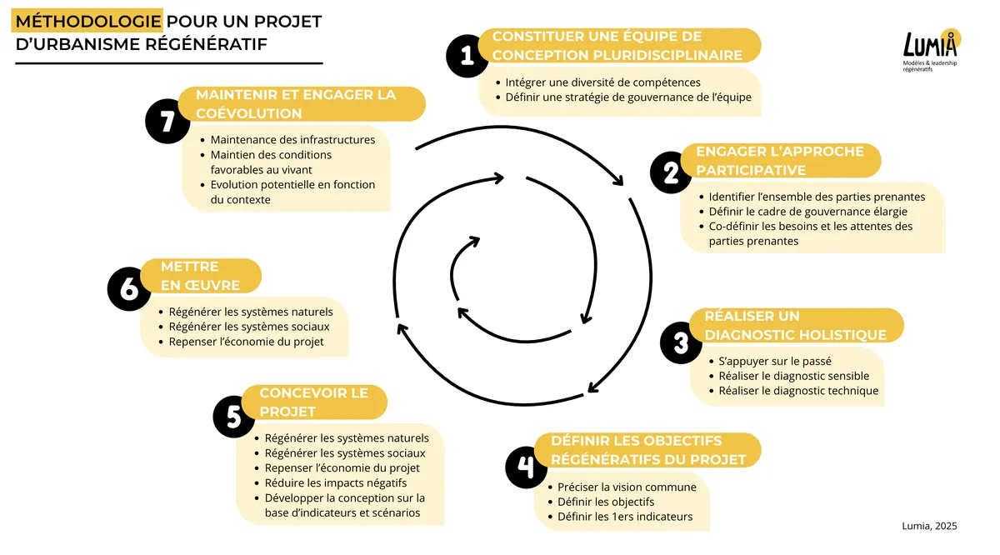
Méthodologie pour un projet d'urbanisme régénératif
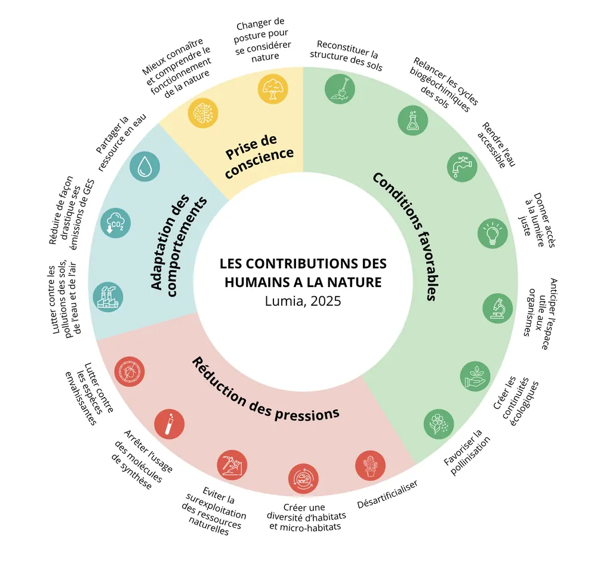
Les contributions des humains à la nature
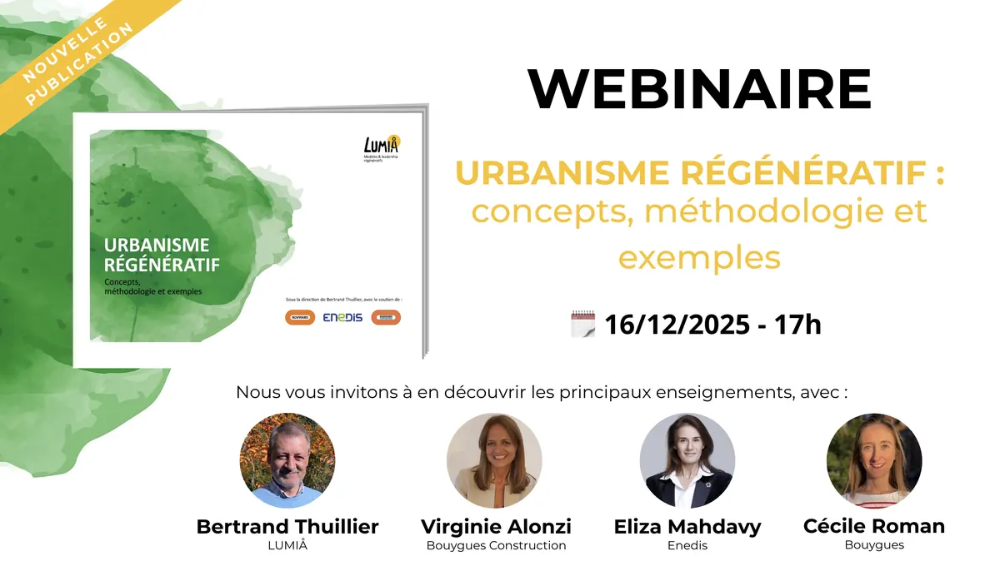
Visuel du webinaire du 16 décembre 2025
La mise en page
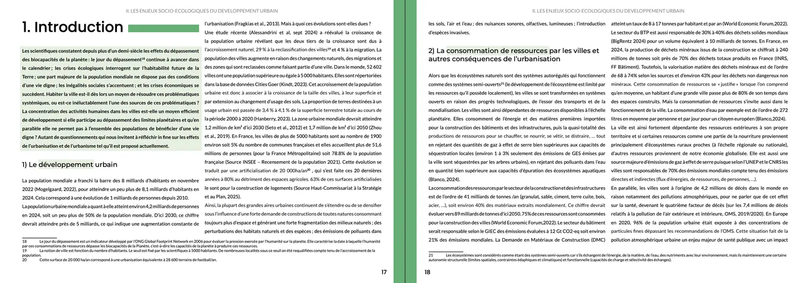
Un texte scientifique dense, structuré pour la lecture
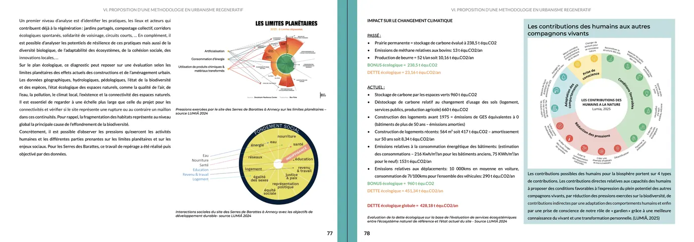
Un cas pratique illustré par des données et des schémas
La diffusion
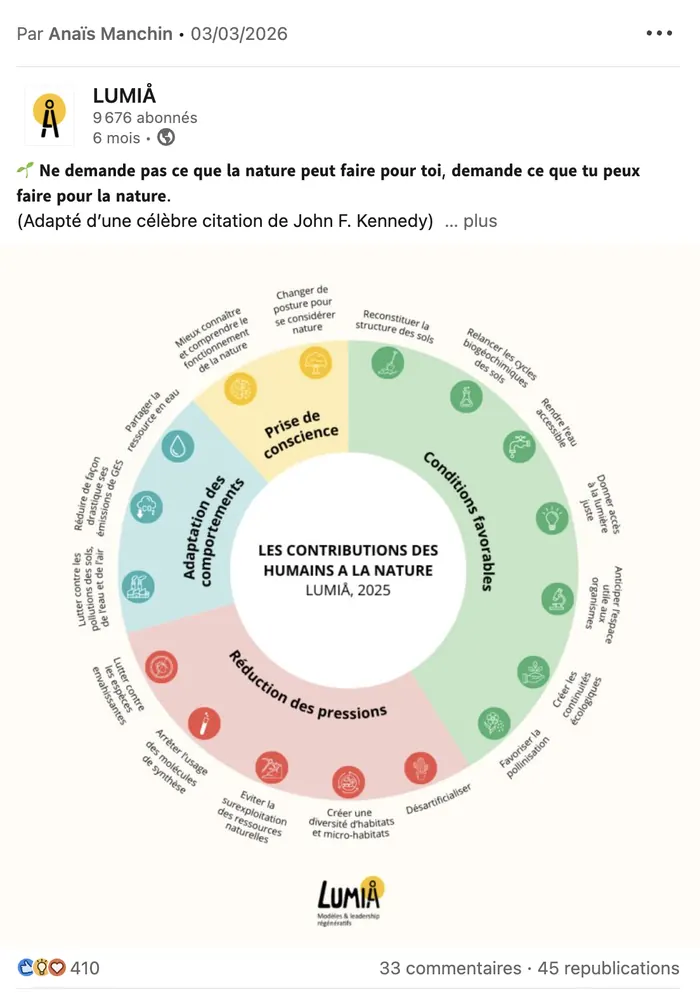
Publication du schéma des contributions, 3 mars 2026
32 348 impressions
410 réactions
33 commentaires
45 republications
7,84 % d'engagement
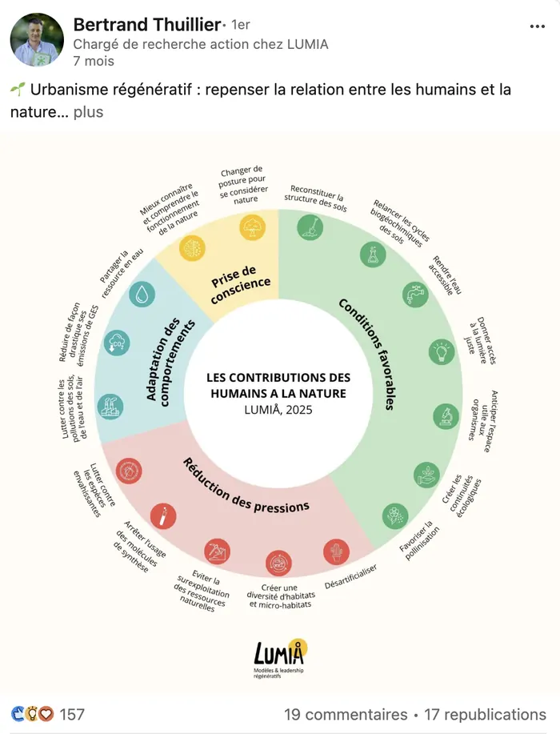
Déclinaison rédigée pour le compte de Bertrand Thuillier, directeur de l'étude
157 réactions
19 commentaires
17 republications
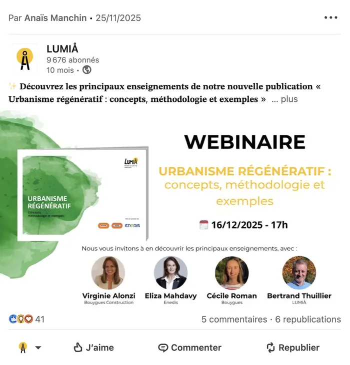
Annonce du webinaire, 25 novembre 2025
6,33 % d'engagement
41 réactions
5 commentaires
6 republications
2 401 impressions
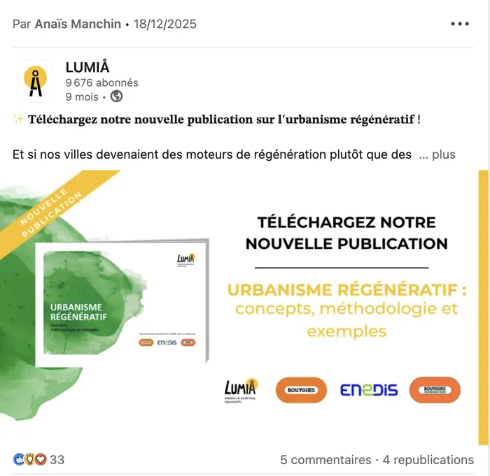
Invitation au téléchargement, 18 décembre 2025
5,89 % d'engagement
33 réactions
5 commentaires
4 republications
1 614 impressions
Taux calculés sur le nombre de destinataires. Données Brevo.
Emailing
Destinataires
Ouverture
Clic
Désinscription
Emailing dédié aux webinaires de décembre (toute la base)
6 258
46 %
8,1 %
0,7 %
Newsletter de décembre (toute la base)
6 215
50 %
6,6 %
0,6 %
Replay du webinaire (inscrits)
217
59 %
33 %
0 %
L'étude a été réalisée sous la direction de Bertrand Thuillier (LUMIÅ), avec le soutien de Bouygues, Bouygues Construction et Enedis. Les visuels et les chiffres sont présentés avec l'accord de LUMIÅ.
LUMIÅ · mai à septembre 2025, puis livraison des contreparties
Mener une campagne de financement participatif, de la collecte aux contreparties
Financement participatif
Ulule
Emailing Brevo
Gestion de communauté
Webinaires
Mise en page
Contexte
LUMIÅ lance sur Ulule la campagne « Faisons de l'économie régénérative une réalité ! » pour financer le PHARE, un centre de ressources ouvert à tous, dédié à l'économie régénérative. Les fonds servent à créer des ressources pratiques pour aider entreprises et territoires à passer à l'action.
Objectifs
Réunir 35 000 € pour financer les premières ressources du PHARE, débloquer des paliers supplémentaires, puis tenir chaque promesse faite aux contributeurs.
Mon rôle
Création de la page Ulule
Relances par email et sur LinkedIn pendant la campagne
Suivi et livraison de toutes les contreparties
Gestion de la communauté des contributeurs
Réalisation du portfolio du vivant et mise en page du guide de la régénération
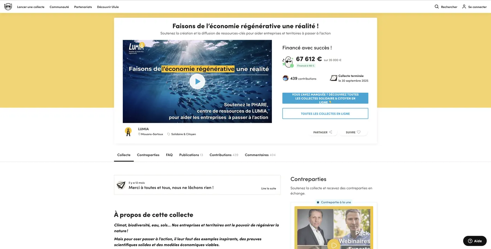
La page de la campagne sur Ulule
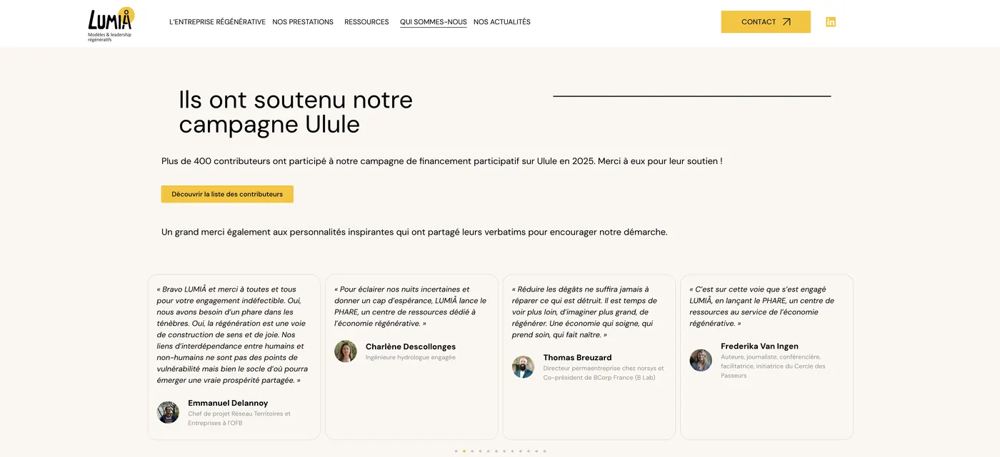
La page de remerciement créée sur le site LUMIÅ
67 612 €collectés pour un objectif de 35 000 €
193 %de l'objectif atteint, avec un palier supplémentaire débloqué
439contributions
30emailings : 12 pendant la campagne, 18 pour livrer les contreparties
Le dispositif
Création de la pagePrésentation du PHARE, paliers et contreparties
Campagne de collecte12 emailings de relance et publications LinkedIn
ProlongationLa collecte reste ouverte et atteint 193 % de l'objectif
Livraison des contreparties18 emailings, webinaires, replays, guide et BD
Communauté et palierPage de remerciement et sortie du portfolio du vivant
Tenir chaque promesse
Une campagne réussie, ce sont des promesses faites à plus de 400 contributeurs. J'ai assuré le suivi de chaque contrepartie, de l'invitation à l'envoi du replay. Intitulés et montants repris de la page Ulule.
Contrepartie
Montant
Ma part
Communauté
20 €
Intégration de tous les contributeurs dans Brevo, page de remerciement et section dédiée sur le site
BD
30 €
Diffusion de l'accès à la BD « Modèles économiques de demain »
Conférence inspirante
50 €
Suivi des contributeurs et envoi des accès à la conférence d'Arthur Auboeuf
Webinaire économie régénérative
75 €
Suivi des inscrits sur Brevo et accompagnement pendant le webinaire
Webinaires Experts
100 €
Création des webinaires, envoi des liens via Brevo, montage et diffusion des replays
Masterclass + Guide famille
250 €
Suivi des masterclass en ligne, mise en page du guide devenu le Guide de la régénération au quotidien
Portfolio du vivant, financé par le premier palier supplémentaire : 132 téléchargements
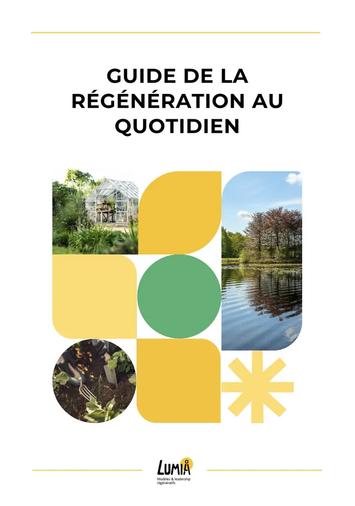
Guide de la régénération au quotidien, réservé aux contributeurs
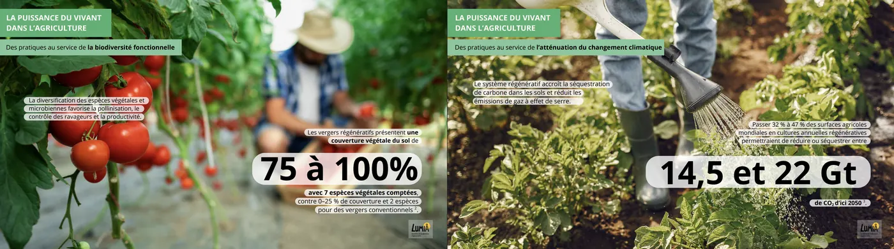
Portfolio du vivant : des chiffres clés mis en scène sur photographie
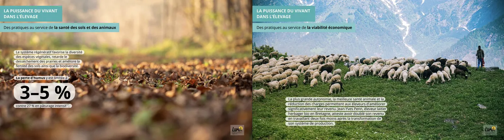
Portfolio du vivant : la partie consacrée à l'élevage
Campagne portée par l'équipe de LUMIÅ. Les visuels et les chiffres sont présentés avec l'accord de LUMIÅ.
Green Management School · Mastère Transition écologique et solidaire, 2e année · 2025-2026
Construire la stratégie de communication responsable d'une offre d'aménagement régénératif
Communication responsable (ADEME)
Stratégie de communication
Personas
Triple ROI
Intelligence collective
Mobilisation des parties prenantes
Indicateurs
Contexte
Living Place est une offre de LUMIÅ qui accompagne les organisations dans l'aménagement régénératif de leurs sites, en mesurant les bénéfices économiques, écologiques et sociaux : le triple ROI. Nouvelle, à la croisée de l'aménagement, de l'écologie, de la performance économique et du bien-être, elle est riche mais difficile à lire. Problématique : comment une stratégie de communication responsable peut-elle mobiliser les parties prenantes internes et externes autour de Living Place ?
Objectifs
Construire la notoriété et la légitimité de l'offre
La rendre compréhensible par tout décideur
Générer des contacts qualifiés, en privilégiant la qualité au volume
Renforcer la crédibilité par la preuve et la transparence
Mon rôle
Diagnostic : enjeux de communication, matrice SWOT, cartographie des parties prenantes
Stratégie de communication responsable, personas et grille triple ROI
Plan de mobilisation en quatre axes, avec le design des ateliers
4principes de communication responsable de l'ADEME appliqués
3personas de décideurs, chacun avec ses propres questions
12questions de décideurs, chacune reliée à une preuve et à un format
4axes pour mobiliser les parties prenantes après la signature
Six enjeux de communication
Légitimer une nouvelle offre face à des acteurs déjà établis
Prouver avec des références terrain, souvent confidentielles au début
Raconter un positionnement complexe de façon claire et pédagogique
Dépasser l'image d'une offre technique réservée aux experts
Faire du vivant un actif stratégique, et non une contrainte
Se prémunir du greenwashing en rendant la rigueur scientifique visible
Le triple ROI comme fil narratif
Un décideur ne cherche pas une méthodologie : il cherche une réponse à ses propres questions. J'ai donc construit la stratégie autour de trois personas, et relié chacune de leurs questions à une dimension du triple ROI, à une preuve vérifiable et au format le plus adapté.
Directeur général
La vision
« Mon site est-il prêt pour le monde de demain ? »
Porte d'entrée : la résilience du modèle économique et la transformation du site.
Directeur financier
Le retour sur investissement
« Combien ça coûte, combien ça rapporte, et en combien de temps ? »
Porte d'entrée : les économies, les financements mobilisables, la valeur du bâti.
Responsable RSE
L'impact et la crédibilité
« Comment aller au-delà du discours et montrer un impact réel ? »
Porte d'entrée : des indicateurs scientifiques intégrables au reporting.
Extrait de la grille triple ROI : 6 des 12 questions.
Décideur
Sa question
Dimension
Objectif de communication
Format
Directeur général
Mon site est-il prêt pour les risques climatiques à venir ?
Économique
Transformer un risque financier réel en levier de résilience
Étude de cas chiffrée
Directeur général
Les solutions fondées sur la nature créent-elles vraiment de la valeur ?
Économique
Susciter la curiosité sans parler de régénératif
Accroche LinkedIn, email de prospection
Directeur financier
Quels financements ou subventions sont mobilisables ?
Économique
Lever le frein budgétaire grâce aux cofinancements
Guide des financements
Directeur financier
La baisse des charges peut-elle compenser une partie de l'investissement ?
Social
Élargir le calcul du ROI au bien-être et à l'absentéisme
Calcul coûts-bénéfices RH
Responsable RSE
Comment lutter contre le greenwashing et garantir notre crédibilité ?
Écologique
Crédibiliser la démarche par une méthode documentée et reproductible
Fiche indicateurs
Responsable RSE
Comment valoriser nos engagements auprès de nos parties prenantes ?
Écologique
Raconter l'impact territorial et l'ancrage local
Publication RSE
LinkedInUn carrousel narratif par persona
NewsletterUn contenu plus approfondi pour une base déjà sensibilisée
Site internetLe point d'arrivée qui rassure avant la prise de contact
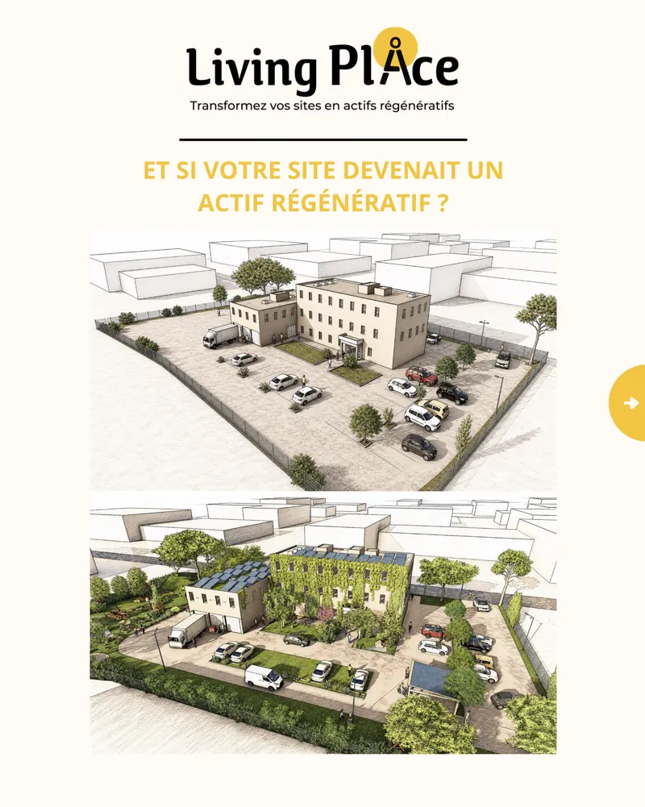
Slide 1 : l'accroche, avec le site avant et après aménagement
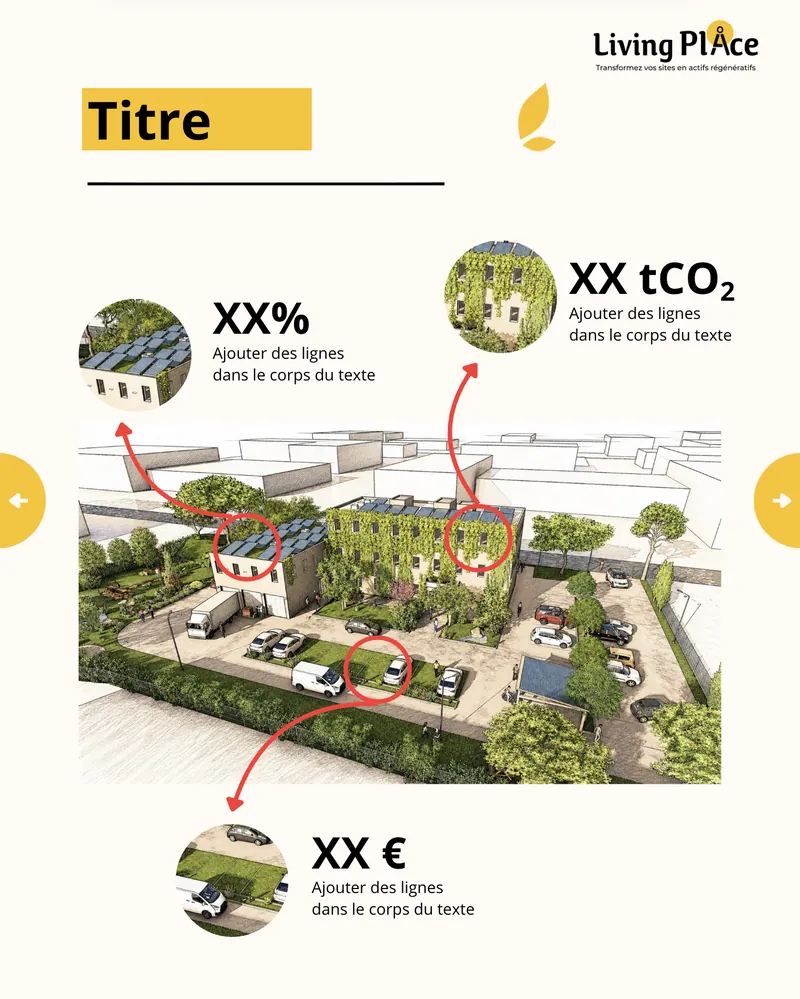
Slide 2 : un gabarit qui relie chaque aménagement à une preuve chiffrée
Mobiliser les parties prenantes après la signature
La communication responsable ne s'arrête pas à la vente. J'ai conçu un plan de mobilisation pour embarquer les équipes du client, puis son écosystème.
Axe 1Sensibiliser les équipesUne demi-journée sur site : apports, cartographie des vulnérabilités du site, restitution
Axe 2Co-construire les prioritésUn atelier de 3 h 30 : questionnaire préalable, jeu de cartes triple ROI, six chapeaux de De Bono, vote
Axe 3Mobiliser l'écosystèmePartenaires opérationnels, financeurs et acteurs du territoire
Axe 4Valoriser le projetLabels, appels à projets, événements
PilotageMesurerIndicateurs stratégiques, de communication et de mobilisation
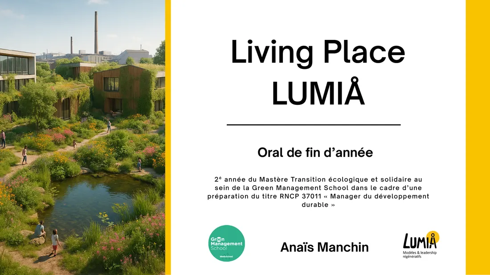
Couverture de la présentation orale
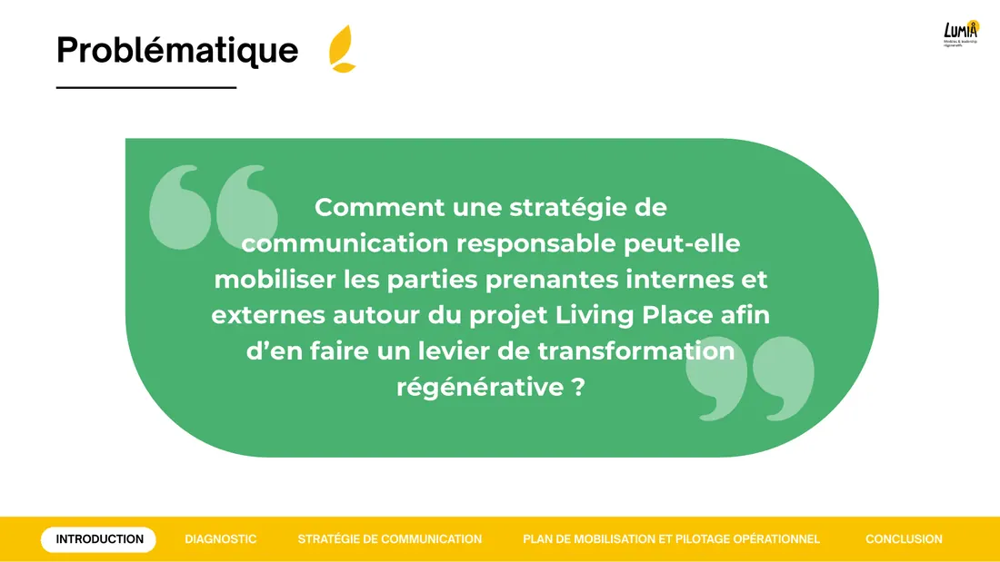
La problématique
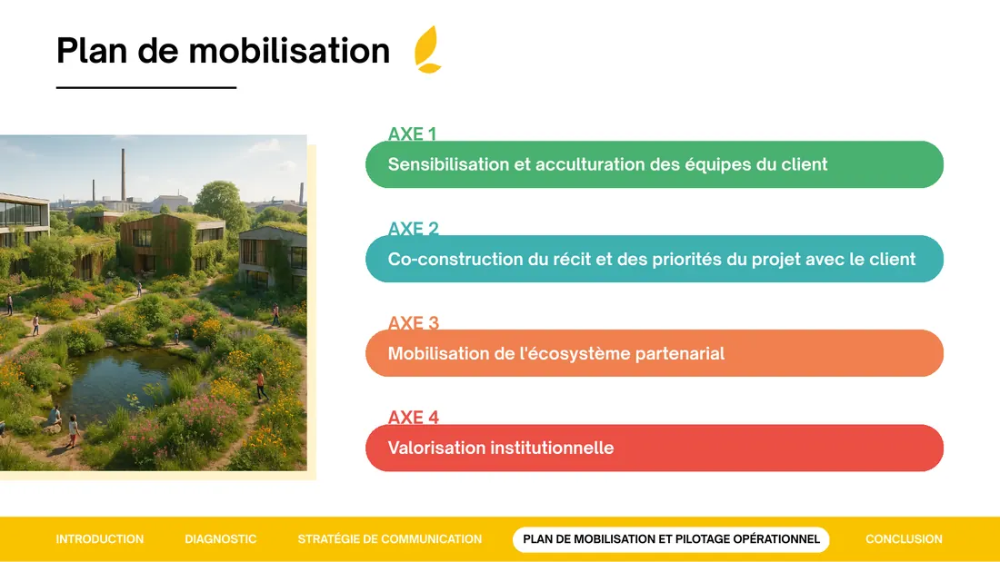
Le plan de mobilisation en quatre axes
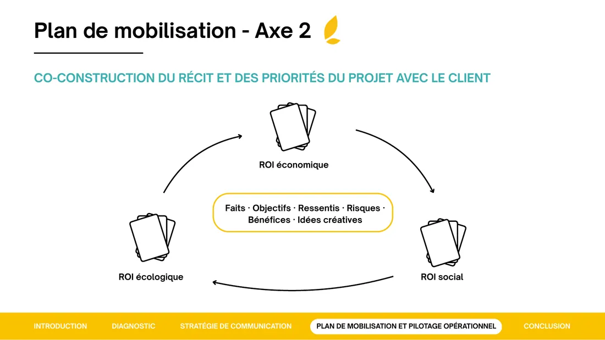
L'atelier de co-construction autour des cartes triple ROI
Et pour votre organisation ?
C'est la démarche que je propose avec Green Phénix
Partir des questions de vos parties prenantes, appuyer chaque message sur une preuve, et construire un plan d'action que l'on peut mesurer.
Compte rendu réalisé dans le cadre du Mastère Transition écologique et solidaire de Green Management School. Les données propres à LUMIÅ et à ses clients ne sont pas communiquées.
Green Management School · Mastère Transition écologique et solidaire, 1re année · 2024-2025
Réaliser le premier Bilan Carbone® de LUMIÅ et en tirer une feuille de route
Bilan Carbone® (méthode ADEME)
Diagnostic stratégique
Plan d'action
Pilotage de projet
Communication responsable
Contexte
Pour mon compte rendu de fin de première année, j'ai pris LUMIÅ comme cas d'étude. La structure souhaitait depuis longtemps mesurer ses émissions, pour garder une cohérence entre ses pratiques internes et ses engagements auprès de ses parties prenantes. Problématique : comment améliorer et valoriser les résultats d'un premier Bilan Carbone® à travers une feuille de route stratégique ?
Objectifs
Mesurer les émissions de l'année 2024, identifier les postes sur lesquels agir, et valoriser les bonnes pratiques déjà en place.
Mon rôle
Collecte des données par deux enquêtes, auprès de l'équipe et des stagiaires
Réalisation du Bilan Carbone® selon la méthode de l'ADEME
PréconiserPlan d'actionTrois préconisations sur les principaux leviers
PiloterFeuille de routeDiagramme de Gantt, matrice RACI, budget, indicateurs de suivi
Exemples de préconisations
Les résultats chiffrés du bilan restent internes à LUMIÅ. Voici les pistes d'action proposées.
Préconisation 1
Des déplacements plus sobres
Rembourser les abonnements de train de l'équipe
Adopter une politique de déplacements professionnels responsables
Proposer des lieux de formation à Paris et à Lyon, plus proches des stagiaires
Planter un arbre pour chaque stagiaire venu en train
Diffuser un guide logistique éco-responsable
Préconisation 2
Un numérique sobre et inclusif
Diffuser un guide des bonnes pratiques : emails, visioconférence, stockage
Choisir des outils numériques plus durables
Appliquer l'éco-conception au site et aux supports de communication
Organiser des midis de la connaissance sur la sobriété numérique et sur l'accessibilité
Préconisation 3
Valoriser les bonnes pratiques existantes
Rendre visibles des choix déjà faits : repas végétariens, bio, locaux et de saison ; train privilégié
Créer une section « bonnes pratiques » sur le site et une série LinkedIn
Intégrer ces pratiques aux supports de formation
Recueillir les idées des stagiaires grâce à un système de suggestions
La présentation orale
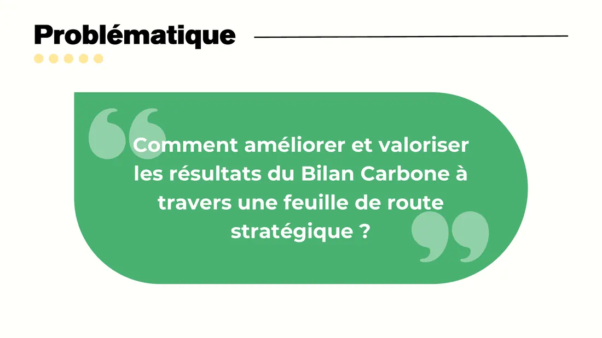
La problématique
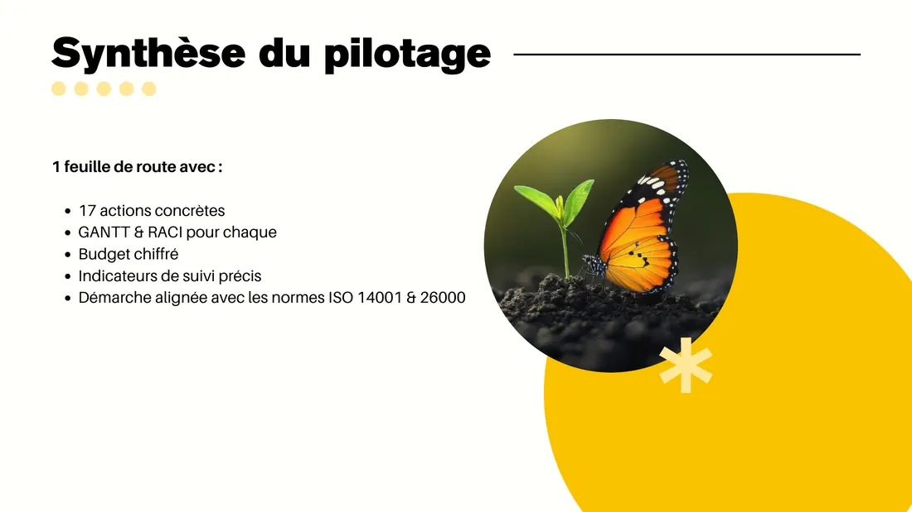
La synthèse de la feuille de route
Compte rendu réalisé dans le cadre du Mastère Transition écologique et solidaire de Green Management School. Les résultats chiffrés du Bilan Carbone® ne sont pas communiqués.
Projet personnel · Classi-Jazz, La Trinité
Communication de Classi-Jazz
Affiches
Direction artistique
Réseaux sociaux
Canva
Contexte
Classi-Jazz est mon école de danse, à La Trinité. Elle propose une dizaine de disciplines, du classique au tahitien, et a besoin de supports qui attirent de nouveaux élèves à chaque saison.
Objectif
Donner envie de s'inscrire, tout en rendant immédiatement lisibles les informations pratiques : dates, disciplines, contacts.
Mon rôle
Conception graphique des affiches et visuels
Choix des photographies et de la hiérarchie des informations
Réalisation sur Canva
Le fil des créations
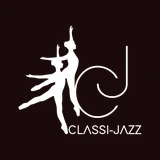
Classi-JazzÉcole de danse · La Trinité · créations réalisées sur Canva